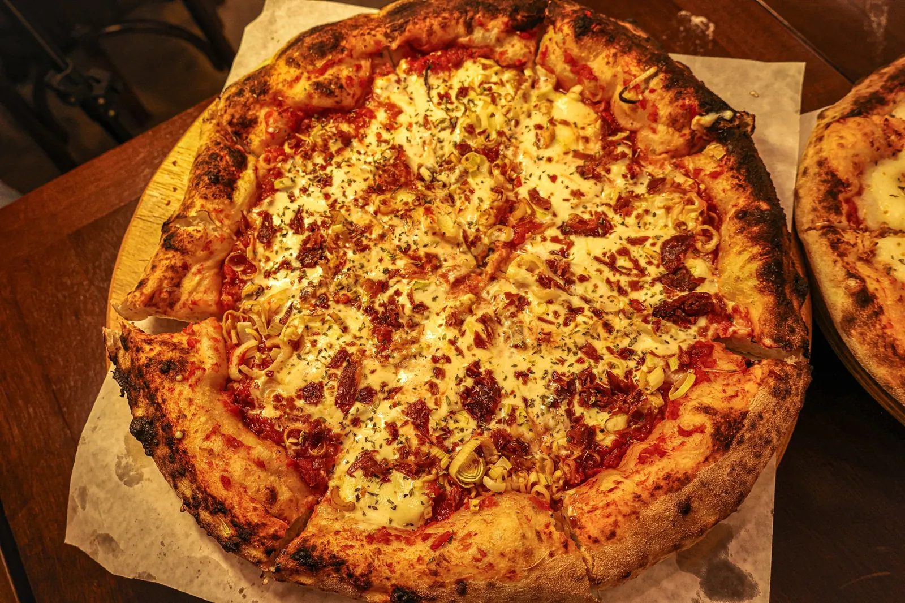
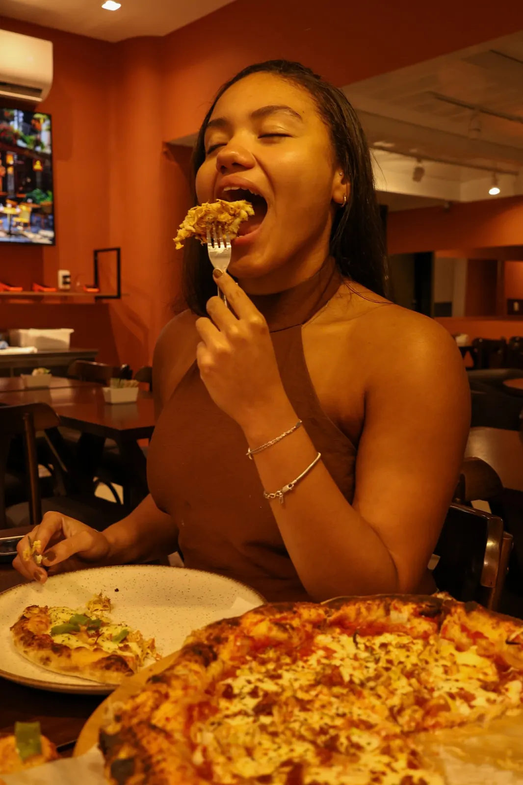
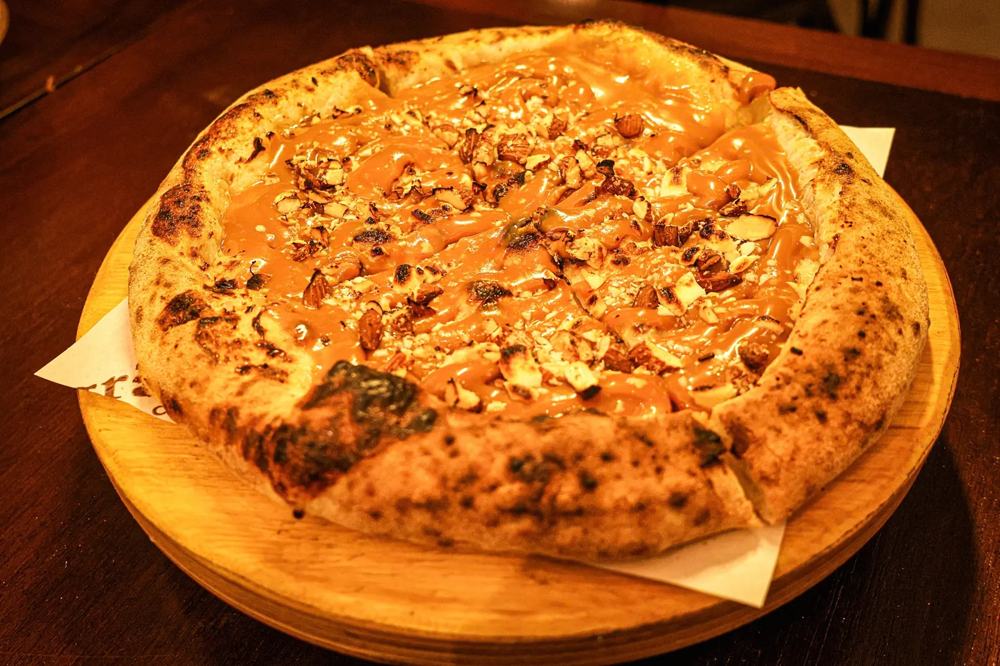

identidade visual · mostarda pizza

o grão de mostarda virou personagem.
e ele tem humor.


01/05
felizpiscandofermentando…quentinha!saiu pra entrega
#E3AE2F
#B33B1B
#220D08
#EDDDCC





próximo case
03 duda borgue